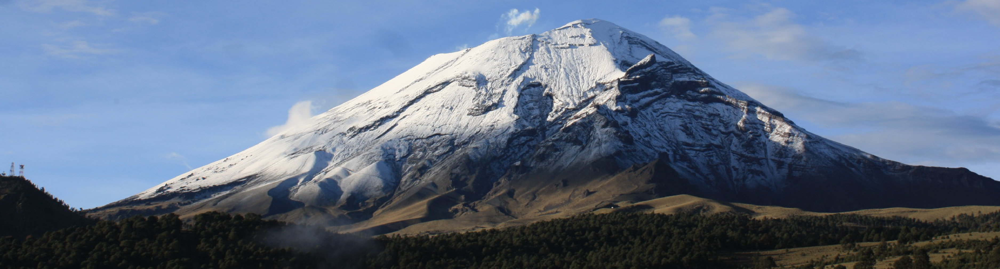

Latest paper
Use of distribution models in the conservation of a Mexican endemic lagomorph

Luis José Aguirre-López, Tania Escalante
Abstract
The volcano rabbit (Romerolagus diazi), endemic to the central-eastern Transmexican Volcanic Belt, is one of the most threatened lagomorphs worldwide. Several factors threaten to decrease its geographical distribution, which is already restricted to the Pelado, Tláloc, Iztaccíhuatl, and Popocatépetl volcanoes. Our study aimed to propose priority areas for the conservation of this rabbit within Iztaccíhuatl-Popocatépetl National Park (IPNP) based on species distribution models. Volcano rabbit presence data were collected through different field sampling techniques and public and private databases. The environmental predictors used to model suitability were obtained from both open-access remote sensors and topographic information. The models’ performance was adjusted by evaluating different sets of variables and data to improve the certainty of the results.
We obtained an area of 132.5 km2 within the IPNP potentially occupied by the volcano rabbit and a high suitability area of 7 km2. In addition, four priority conservation polygons for the volcano rabbit were identified within the National Park. We showed that the suitability and potential distribution are not uniform in the park, being the alpine meadow dominated by Muhlenbergia sp., the most suitable area for R. diazi. Therefore, the conservation strategies should focus on preserving these meadows in the prioritized polygons, avoiding tourist and unskilled personnel’s access. This work represents a contribution to the conservation of the volcano rabbit and a theoretical and practical tool for use in the IPNP.